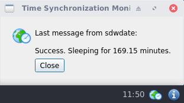

We believe security software like Kicksecure needs to remain Open Source and independent. Would you help sustain and grow the project? Learn more about our 14 year success story and maybe DONATE!
Time AttacksDocumentationsdwdate-guiPrevious page: Time AttacksIndex page: DocumentationNext page: sdwdate-guisdwdate: Secure Distributed Web Date

sdwdate - Secure Distributed Web Date - Homepage
Introduction
Time keeping is crucial for security and privacy. sdwdate is a Tor-friendly replacement for rdate and ntpdate that sets the system's clock by communicating via end-to-end encrypted TCP with Tor onion webservers. Chosen time providers are exclusively reputable sources (whistle-blowing and privacy-friendly onion sites) that are highly likely to be hosted on different hardware.
At random intervals, sdwdate connects to a variety of webservers and extracts the time stamps from http headers (see: RFC 2616).
Sdwdate vs NTP
Feature |
NTP |
|
|---|---|---|
Written in memory-safe language |
Yes |
No |
Distributed trust |
Yes |
No |
Secure connection by default (authentication and encryption) |
Yes |
No |
Gradual clock adjustments |
Yes |
Yes |
Daemon |
Yes |
Yes |
Functional over Tor |
Yes |
No [1] |
Tor not required |
No |
Yes |
Client, time fetcher |
Yes |
Yes |
Server, time provider |
No, not yet |
Yes |
AppArmor profile |
Yes |
Yes |
systemd security hardening, seccomp |
Yes |
? |
Drop-in config folder |
Yes |
No |
Proxy support |
Yes |
|
Possible to secure by default on GNU/Linux distribution level |
Yes |
No [4] |
Secure |
Yes |
No [5] |
Optional GUI |
Yes, sdwdate-gui (systray icon) |
No |
See also:
- Installation on headless systems; see footnote. [6] [7]
- Time Attacks
- Dev/TimeSync
- sdwdate-gui
TODO:
- Server, time provider
- Sdwdate issue tracker: Phabricator
Disable Autostart
Usually not required. Highly discouraged. May be useful for offline (vault) VMs.
1. Platform specific notice.
- Kicksecure for Qubes: In Template.
- Kicksecure: No extra steps required.
2. Open a terminal.
Platform specific. Select your platform.
Kicksecure USER Session
If you are using a graphical Kicksecure with LXQt, complete the following steps.
Start menu → System Tools →
QTerminal
Kicksecure SYSMAINT Session
In the System Maintenance Panel, under the
Misc section,
click Open Terminal.Kicksecure-Qubes
If you are using Kicksecure-Qubes, complete the following steps.
Qubes App Launcher (blue/grey "Q") →
Kicksecure App Qube (commonly named kicksecure)
→ QTerminal
3. Disable sdwdate.
Run the following command.
sudo systemctl mask sdwdate
4. Done.
Autostart of sdwdate has been disabled. Sdwdate will not be started after reboot.
5. Optional. Consider disabling sdwdate-gui autostart.
Perhaps at a later time, perhaps after a test reboot, the user might consider disabling sdwdate-gui.
6. Optional. Consider disabling Boot Clock Randomization.
Perhaps at a later time, perhaps after a test reboot, the user might consider disabling Boot Clock Randomization: How-To: Disable Boot Clock Randomization.
sdwdate vs Tor
sdwdate is reliant on a functioning Tor because it utilizes onions, which necessitates a Tor connection.
- Tor Connectivity: If Tor isn't operational, it's highly probable that the issue doesn't lie with sdwdate.
- Timezone: The timezone configuration (host or VM) isn't critical as long as the time is accurate. A significantly incorrect time can prevent Tor from connecting, but this isn't a direct concern of sdwdate. Can the timezone be fictitious, differing from the actual geographical location? Absolutely, this isn't an issue.
- VPNs: Virtual Private Networks (VPNs) don't have any direct relation to timezones, time, or sdwdate.
Qubes Specific
Qubes Template
Information for advanced users:
Laymen users can skip this wiki chapter.
In Qubes Kicksecure Template, sdwdate systemd unit is
disabled by default because Qubes Templates are non-networked as per
Qubes default. This is unspecific
to Kicksecure. Other time synchronization daemons, such as NTP,
would also be dysfunctional in Qubes Templates due to these being
non-networked by default. Instead, time in Qubes Templates synchronizes
by using Qubes ClockVM.
For instructions on how to use sdwdate inside ClockVM, see Kicksecure for Qubes wiki chapter ClockVM.
Technical references:
/lib/systemd/system/qubes-sync-time.timer/lib/systemd/system/qubes-sync-time.service/usr/bin/qvm-sync-clock/usr/lib/qubes/qubes-sync-clock- Qubes Time Synchronization Features
- Create sys-ops-whonix VM for Enhanced Security and Isolation in Qubes-Whonix #9294
- Qubes-Whonix-Gateway as ClockVM
sdwdate Design
Server Authentication
sdwdate only connects to Tor onion services, which are encrypted by default and do not rely on SSL certificate authorities (CAs). Three different pools are used for time sources so that if too many connections fail for any given pool, [8] the pool is considered as potentially compromised and sdwdate aborts.
sdwdate Source Pools
Determining what sources should be trusted is an important issue; this is also a problem with NTP.
The sdwdate pools used by Kicksecure are based on stable and reliable
Tor onion service web servers. The pools are listed in
 Kicksecure/sdwdate.
Kicksecure/sdwdate.
The various onion services are categorized into three different pools. Any member in one pool should be unlikely to share logs (or other identifying data), or agree to send fake time information, with a member from the other pools. In basic terms, sdwdate picks three random servers - one from each pool - and then builds the mediate (middle position) of the three advertised dates.
sdwdate is only using 'pal' pools and not relying on 'neutral' and 'foe' pools as per tails_htp, because a good rationale for that approach has not yet been provided. [9] [10]
sdwdate Time Sources Criteria
Current Implementation 1.0
Prerequisite knowledge: sdwdate time source pool design
These criteria are meant to be fitting the dynamic trust of the internet and to be as close as possible to the highest trustable level.
Time Source Inclusion Criteria
- Trustworthy. This criteria probably means many different things for many different people. To clarify, it needs to be compatible with the Kicksecure Platform Goals. Trustworthy as far as infrastructure goes, for example as in unlikely to be using cloud and/or insecure hosting for receiving confidential documents.
- Hosted by non-anonymous organizations or persons.
- Reachable over an
.oniondomain. [11] - If there is a forced redirection from (non-TLS) http onion to TLS https onion, the TLS certificate must be valid. [12]
- Highly likely to be hosted on different hardware than other sdwdate time source pool members.
- Onion v3.
- Must be a "real" onion service. Must not redirect to clearnet.
Details:
It is required that each sdwdate time source pool member has both, a
clearnet domain name and an onion domain name. An example of a clearnet
domain name is kicksecure.com. An example of a onion domain
name is
w5j6stm77zs6652pgsij4awcjeel3eco7kvipheu6mtr623eyyehj4yd.onion.
The clearnet domain must be reachable TLS with a valid TLS certificate. This is because
when a website is reachable over .onion which has a
corresponding clearnet domain name with the same contents, hosted by the
same author, its easier to verify the identity of the website author,
when the website was created, where the website or its maintainers are
located.
There needs to be evidence that that onion domain is hosted by the
same author as the clearnet domain. This can be a mention of the onion
domain on the clearnet domain or the Onion-Location
HTTP header. The latter can be conveniently noticed by visiting the
website using Tor Browser and then showing onion available
and seen by using services such as securityheaders.com or
using the curl command line tool, i.e.
curl --head https://clearnet.domain.
Onion services likely hosted on the same hardware or by the same author will be grouped together and act as one. I.e. these will be considered mirrors of the same onion. sdwdate picks one mirror from the group randomly. Any onion from that author will not be used more than other pool members. The load among these grouped pool members will therefore be load balanced.
Reasons:
This provides higher certainty of having trustworthy time source members because these websites and services services have a reputation to maintain. This includes for example e-mail services such as protonmail or big news network like The Guardian and so on. Note: Just because these are known organizations and very hard to make them operate maliciously that doesn't mean there are guarantees whether by mistake, hacks or by outside pressure.
Unrealistic Time Source Criteria
- The onion service being popular or receiving great amount of traffic. This is very hard to verify, compare as outsider and reason about. Also (very) high traffic onion services might be less reliable.
Suggestions for sdwdate time sources
- Time Source Inclusion Criteria
- New sdwdate pool member additions must be proposed in public in Kicksecure development forum thread Suggest Trustworthy Tor Hidden Services as Time Sources for sdwdate to allow anyone to comment on it.
- Please check the suggested onion was already previously suggested by searching the forum thread.
- Please try to avoid suggesting onions which are already included in
 Kicksecure/sdwdate.
Kicksecure/sdwdate.
Rules for sdwdate time source related git pull requests
- Suggestions for sdwdate time sources
- the following type of changes need to be proposed separately using
separate pull requests
- removal of sdwdate pool members because these are offline, unreliable, their clock is too much off or otherwise no longer comply with the requirements
- updates to already existing sdwdate pool members
- such as updated onion domain names in case the onion domain name change
- additions of new sdwdate time sources (if there where no objections in previous forum discussion)
Time Sources Exclusion Criteria
The rationale for the following exclusion criteria is to avoid likely insecure websites and also to avoid any mention whatsoever of controversial content within sdwdate source code.
The following categories must be avoided and deleted if turning out later so:
- onion v2 since deprecated.
- Unstable Website: It is not useful to add a service which is periodically unavailable.
- Sold Out Website: It is better to remove websites there recently sold out with major content changes to be expected.
- Website Went Offline: If the website went offline then it should removed.
- Contain Any Form of Pornographic Content.
- Contain or Encourage on Damaging Human Health: like drugs, alcohol, smoke, etc.
- Contain Any Form of gore, gangs, terrorist, assassination Content.
- Contain Deanonymization or Cracking Services or Spying Agencies: like HackingTeam or Cellebrite or the NSA, GCHQ, etc.
- Contain or Related to Any Form of Governmental Website: like
ministries or military websites or anything similar. (Specially those
which end with
.gov.) - Draw highly controversial attention to Kicksecure or sdwdate due to their on-site or off-site activities.
- Websites which Kicksecure as default software sources (such as Debian) or potential other purposes. This is because, should there be any issues with these services (such as being down for maintenance or other issues such as being under a denial of service attack) this should not break multiple things in Kicksecure such as sdwdate and APT upgrading at the same time.
Comment Field Rules
The sdwdate configuration format for onion sources is:
onion.onion # web.archive.org-link-with-evidence-onion-belong-to-corresponding-clearnet-domain optional-clearnet-link optional other comments
Or:
onion.onion # archived-link-with-evidence-onion-belong-to-corresponding-clearnet-domain mandatory-clearnet-link optional other comments
The part of the the hash ("#") for each pool member is
shown in sdwdate logs as comment.
The first part of the comment must be an archived link that confirms that the onion link belongs to the organization. I.e. is not an anonymous mirror, impersonating link, fake or scam. If using web.archive.org nothing else is required. Clearnet domain in the comment field is optional since for links that are archived on archive.org it is trivial to extract the unarchived link from the web.archive.org archived link.
If links are archived with archivers other than web.archive.org then after the archived links there must be a space and the unarchived clearnet link.
After that there can be another space and additional comments.
In doubt just look at the many existing examples in
 Kicksecure/sdwdate
and imitate new entries.
Kicksecure/sdwdate
and imitate new entries.
This is useful so users, reviewers can more easily see in sdwdate logs which organizations where used during sdwdate time fetching since it is hard to remember and/or cumbersume to look up that xxx.onion belongs to or cumbersome to manually look up every time.
Confirmation that onions belong or at least did belong to a specific
organisation is possible can be done either manually by opening the
archived link and looking if it mentions the corresponding onion or
assisted with the
 Kicksecure/sdwdate
script.
Kicksecure/sdwdate
script.
/usr/share/sdwdate/onion_test_confirm
Contributor Proposed Version 2.0
It is being proposed to drop the requirement
hosted by non-anonymous organizations or persons. I.e.
onion's hosted by anonymous organizations or persons should also be
permitted under the following conditions.
- Here things are little bit more trickier as we cannot know much
except what the website claiming to be so we cannot know who, where, how
long etc. this website was running. So we need verification mechanism to
check:
- Consensus or Aggregation of Testimonies: We try to collect users opinions on this website and thus clearnet will be heavily involved into this specially in social media and blogs. So we can verify this website is really doing what it claims to be doing. For example, an e-mail service claiming to not spam their users should not spam their users.
- Seniority: The older a website becomes, the more trustworthy it will be considered if there have not been any (deliberate or by mistake?) public verifiable breaches of its promises. Recently established websites cannot be with reasonable certainty considered well tested, established, being scam, fraud, deception or not.
Discussion here: https://forums.whonix.org/t/sdwdate-time-sources-criteria/11035/2
Tor Consensus Time Sanity Check
sdwdate checks if dates/times from remote servers (onions) are within
Tor consensus/valid-after and
consensus/valid-until date/time, otherwise rejects those.
An example from sdwdate log.
2021-01-09 14:47:17 - sdwdate - INFO - * consensus/valid-after: 2021-01-09 13:00:00
2021-01-09 14:47:17 - sdwdate - INFO - * remote_time : 2021-01-09 14:49:38
2021-01-09 14:47:17 - sdwdate - INFO - * consensus/valid-until: 2021-01-09 16:00:00
2021-01-09 14:47:17 - sdwdate - INFO - * time_consensus_sanity_check: sanesdwdate Time Replay Protection
Done in testers repository master. Will flow to stable as per usual.
sdwdate internally uses
 Kicksecure/helper-scripts.
Kicksecure/helper-scripts.
Effectively, sdwdate looks at file
/usr/share/timesanitycheck/minimum_unixtime which contains
a minimum unixtime timestamp which was created by developers during
development and file
/var/lib/sdwdate/time-replay-protection-utc-unixtime which
will be created every time after sdwdate has successfully set the time.
sdwdate will not set time earlier than the time in these files. The
purpose of this is to implement Time Replay Protection. No matter if
sdwdate onion servers later give false time information due to a bug or
an attack to users, the clock would never be set to a much earlier date
such as year 1980 or an earlier date than the release date.
File /usr/share/timesanitycheck/minimum_unixtime will be
occasionally updated by developers. It is planned to update that file at
least for every release. Whenever
/usr/share/timesanitycheck/minimum_unixtime was updated. Time Attacks thorough false
time source replies against sdwdate with times before that time will not
be possible.
Most users users it should not be required however users are free to
create a custom extra file /etc/minimum-unixtime or
/usr/local/etc/minimum-unixtime which sdwdate would also
honor and never set the clock earlier than that time. All minimum
unixtime files would be considered.
sdwdate could optionally also be instructed to ignore vendor provided
file /usr/share/timesanitycheck/minimum_unixtime, sdwdate
auto generated file
/var/lib/sdwdate/time-replay-protection-utc-unixtime and
above mentioned user custom extra file by by creating a custom override
file /etc/minimum-unixtime.override (lower priority) or
/usr/local/etc/minimum-unixtime.override (higher priority)
which take absolute priority and result in ignoring all other minimum
unixtime files. Valid values in any minimum unixtime files are only
integer values. Must be unixtime. Example:
1611651349. Minimum value is 0 which however
does not make sense except for testing purposes. That would effectively
disable time replay protection. For testing purposes it might be useful
to set a far future date such as 2611651349 which could be
temporarily enabled to test if sdwdate's time replay protection would be
functional.
sdwdate Clock Randomization
Log example.
End fetching remote times.
pool differences, sorted: [-35, 5, 5]
median time difference: +5.000000000
randomize : -0.976225329
new time difference : +4.023774671The rationale for that is that an onion time source could try to tag specific users. sdwdate uses the median time (not average) fetch result. (Average time of the 3 pools would not be safe. To explain, suppose one pool returning a result of -1000 seconds time difference would overpower the time pools with a more realistic time difference of for example -1 and -2 seconds.)
Let's say the normal distribution for most users would be
pool differences, sorted: [7, 5, 3]. Then and onion time
source could experiment with saying 4, 5, 6 to split users
into different groups. This is assuming that not too many users ask the
same server at the very same time. A realistic assumption given that the
total number of Tor users is not that high. By adding up to
± 1 second it gets harder to tag specific
users.
After boot, sdwdate sets the time using the date after
fetching times from remote.
- Without clock randomization: The command executed from sdwdate could
be
sudo date --set "Tue 12 Jan 2021 06:48:55 AM UTC". This allows for more opportunities to tag user because nanoseconds are to0without any randomization. The full command to be run could be guessed by the sdwdate time source. Or might change fromold unixttime: 1610866967.519335985tonew unixtime : 1610866966.519335985.
- With clock randomization: The command executed from sdwdate could be
sudo date --set "Tue 12 Jan 2021 06:48:55:976225329 AM UTC". Only the first part of the date/timeTue 12 Jan 2021 06:48:55 AM UTCcan be guessed but an an extra random clock skew is introduced. The random nanoseconds part976225329being unpredictable by remote time sources.
(These are just examples. sdwdate internally actually uses unixtime since that is easier in the program. Just to illustrate the mode of operation.)
If nanoseconds are randomized and later leaked to for example remote web servers, it won't be possible for the remote web server know if clock is just skewed normally or if it was set using sdwdate with randomization. Rationale of randomization is making it look more like a naturally skewed clock.
Accuracy of sdwdate is far outside of ± 1
second anyhow. Due after asking a remote onion web servers for the time
and the result being relayed back through the slow Tor network to the
user with hard to predict latency, nanoseconds might not matter anyhow.
By the time sdwdate running date, nanoseconds might already
be randomized without extra randomization required.
When supposing for the sake of threat modeling that a web server can
observe clock jumps from remote because of lets say browser, javascript
or something leaks it is better to jump to a randomized number of
nanoseconds 976225329 than 000000000.
This feature, sdwdate clock randomization, is unrelated to Boot Clock Randomization. sdwdate Clock Randomization happens only after sdwdate has fetched the time from onion time sources before setting the time. Boot Clock Randomization happens at boot time only. See also Boot Clock Randomization.
No clock randomization is planed when temporarily setting time based on Tor certificate lifetime or Tor consensus time middle range. This is because these times are so far off from the the real world time and so few users are using it that randomization could not help or even make users more trackable.
Onion Time Sources Candidates List
The links below are listed to keep track of pool candidates:
- https://en.wikipedia.org/wiki/SecureDrop
- https://securedrop.org/directory/
- https://www.globaleaks.org/usecases/
- MoreOnionsPorFavor (xcancel)
- https://blog.torproject.org/more-onions-end-of-campaign/
- SecureTheNews (xcancel)
- https://freedom.press/news/five-years-of-secure-the-news/
Screenshots
Figure: sdwdate GUI Control Panel
Figure: sdwdate GUI Successful Check

Clock Fixing
Demonstration
sudo date --set "Fri 24 Sep 2011 06:51:24 PM UTC"Sat 24 Sep 2011 06:51:24 PM UTCsudo systemctl stop torsudo bash -x anon-consensus-del-files++ id -u
+ '[' 0 = 0 ']'
+ rm -f /var/lib/tor/cached-certs
+ rm -f /var/lib/tor/cached-microdesc-consensus
+ rm -f /var/lib/tor/cached-microdescs
+ rm -f /var/lib/tor/cached-microdescs.newsudo systemctl restart sdwdateTODORelated
- Manually Clock Fix
- Timezone
- Time Attacks
- Dev/sdwdate
- Dev/TimeSync
- sdwdate-gui
- Boot Clock Randomization
Footnotes
- Requires UDP, which is unsupported by Tor. See Tor#UDP.
- https://web.archive.org/web/20210619175502/https://lists.ntp.org/pipermail/questions/2007-October/015754.html
- https://web.archive.org/web/20080226171005/http://linux.derkeiler.com/Mailing-Lists/Debian/2003-07/0361.html
- NTP security vulnerability because not using authentication by default
- See Dev/TimeSync#NTP.
- If replacing ntp with sdwdate, run the following command to avoid installing 160+ recommended packages: sudo apt --no-install-recommends install sdwdate
- https://forums.whonix.org/t/sdwdate-and-headless-system/8491
- For example, due to being unreachable or replying with invalid data.
- https://web.archive.org/web/20200209085217/https://github.com/whonix/whonix/issues/310
- https://gitlab.tails.boum.org/tails/tails/-/issues/8283
- https://phabricator.whonix.org/T131
- For now, this is for technical reasons only. url_to_unixtime refuses websites that redirect from (onion) http to (onion) https which at the same time have an invalid TLS certificate. Adding extra code to ignore invalid TLS certificates hasn't been done yet. It might also be argued in future, that if an onion provides a valid TLS certificate, that onion should be fetched over TLS and certificate errors should not be ignored. See Notes about End-to-end Security of Onion Services. Onion services reachable over non-TLS http which do not redirect to TLS https are acceptable.
Categories: Documentation